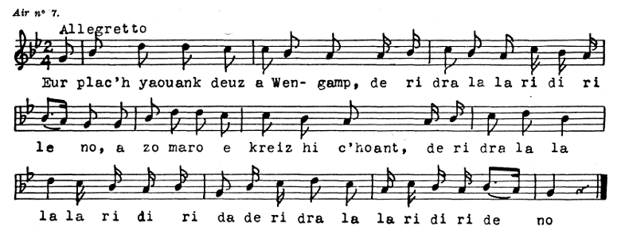

Ur plac'h iaouank deuz a Wengamp
Une jeune fille de Guingamp
A girl of Guingamp
Chant recueilli par le colonel Bourgeois
A Plussulien dans les Côtes du Nord (Côtes d'Armor)
Chanté par Pierre Baudoin en mai 1858.
Publié dans "Kanaouennoù Pobl", VI, avec la mélodie (air 7)

Mélodie
Arrangement par Christian Souchon (c) 2023
Source: site tob.kan.bzh
|
Ur plac'h iaouank deuz a Wengamp 1. Ur plac'h yaouank d'eus a Wengamp deridra la la, ridiridai-no A zo marv e-kreiz he c'hoant deridra la la la la ridirida deridra la la ridiridai-no. 2. A zo marv e-kreiz he c'hoant He sell't ouzh ur milouer arc'hant 3. He sell't ouzh ur milouer arc'hant ( 1) He devañ bet gant he c'halant 4. He mamm a Iare de'i un deiz: - Jezuz! Ma merc'h koantaet out-te! ! 5. Petra dalv din-me be'añ koant Pa na n'hellan kavout ma c'hoant? 6. Tavit ma merc'h, na ouelit ket Warc'hoazh me yey da Zant Brieg 7. Warc'hoaz me yey da Zant Brieg Me zegaso dac 'h ur c 'hloareg 8. - Benn ma vet bet e Sant Brieg Me vo marv ha douaret. 9. Lakaet me e-kreiz ar vered Ha warnezhañ pewar boked 10. Ha daou re wenn ha daoti re zu Da gas ar c'hafiv en daou du. |
Une jeune fille de Guingamp 1. Une fillette de Guingamp deridra la la, ridiridai-no Est morte de désir ardent deridra la la la la ridirida deridra la la ridiridai-no. 2. Est morte de désir ardent Dans un miroir en se mirant 3. Dans un joli miroir d'argent ( 1) Cadeau reçu de son galant 4. Or, sa mère lui dit un jour: - Vous embellissez chaque jour ! 5. Belle? A quoi bon? Quand mon souhait Le plus cher n'est pas exaucé? 6. Allons, sêchez vos pleurs. Je veux Aller demain à Saint-Brieuc. 7. A Saint-Brieuc et dès demain Avec un beau clerc je reviens. 8. - Mais lorsque vous serez rentrée, Je serai morte et enterrée. 9. Avec quatre fleurs qu'on m'enterre Au beau milieu du cimetière! 10. Deux blanches ainsi que deux noires: Un deuil digne de mon histoire. Christian Souchon (c] 2023 |
A girl of Guingamp 1. A young girl from Guingamp deridra la la, ridiridai-no Died of desire deridra la la la la ridirida deridra la la ridiridai-no. 2. Died of burning desire When in a mirror looking at herself 3. In a silver mirror ( 1) A gift from her sweetheart 4. Her mother said to her one day: - You grow prettier every day! 5. Pretty? What's the point? When my wish My dearest wish is not granted? 6. Come on, dry your tears. I will Go tomorrow to Saint-Brieuc. 7. To Saint-Brieuc and tomorrow A handsome "clerk" I'll bring you. 8. - But when you get back home, I will be dead and buried. 9. With four kinds of flowers they'll bury me Right in the middle of the cemetery! 10. Two white and two black bunches: The sort of mourning that will be worthwhile! |
NOTE:
| [1] Anciennement, avant qu'on eut inventé les glaces étamées, on se servait de miroirs d'argent ou argentés. | [1] In former times before tinned looking glasses were invented, silver(y) plates were used as mirrors. |
Melezourioù arc'hant ("Les miroirs d'argent" du Barzhaz Breizh)